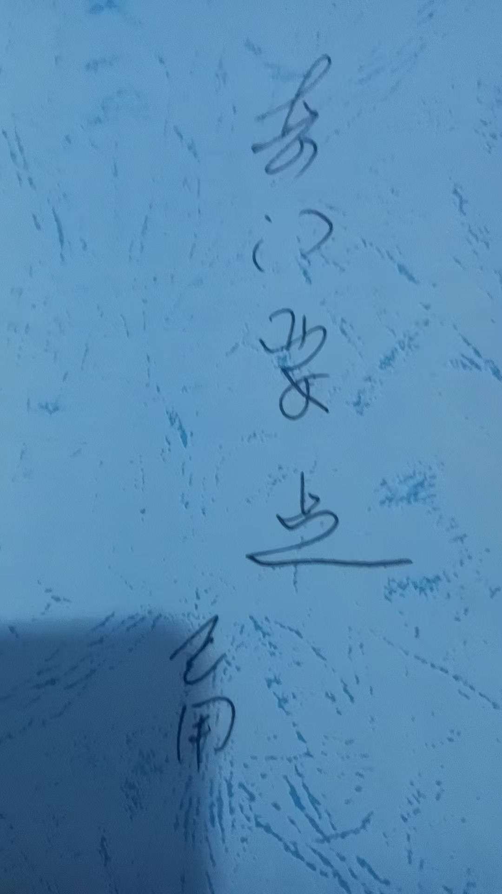

20260518八字，风水，奇门法术布阵全部免费
占卜预测奇门遁甲风水布局 原始对话记录
新学生，勤奋好学
那我就倾囊相授
除了九转五行不能免费之外
八字，风水，奇门法术布阵全部免费
只讲要点，很快就能掌握使用
学的盆满钵满
学完直接开企业策划馆
以下为编者整理的主题文章
编者整理 · 主题文章
奇门法术布阵入门：八字、风水、奇门怎么一起学
一句话结论：传统术数里，八字看"命"、风水看"环境"、奇门看"时空与布阵"，三者常配合使用。原记录提到"八字、风水、奇门法术布阵全部免费教，只讲要点"，本页据此讲清这三门各自管什么、怎么配合。
一、一句话说清三门的分工
| 门类 | 看什么 | 一句话 |
|---|---|---|
| 八字 | 命 | 看出生的"先天格"，人的底子 |
| 风水 | 环境 | 看居所/场所的气场布局 |
| 奇门（法术） | 时空 | 看时间、方位，并可"布阵"调理 |
原记录的说法是："八字、风水、奇门法术布阵全部免费，只讲要点，很快就能掌握使用"（记录者另称"九转五行"不免费）。本页只作文化了解，不涉及任何报名、收费或效果承诺。
二、什么是"奇门法术布阵"
奇门分两支：
- 奇门占卜：起局、解盘、断事；
- 奇门法术（运筹/布阵）：不只"看"，还要借方位、时令、器物做"布局"——即"法术布阵"。
布阵指的是：根据盘里吉凶方位，在空间上做布置（如借三吉门方位、避开凶方），以求"扶吉避凶"。
三、三者怎么配合
常见的配合逻辑：
- 八字定命：先知道这个人先天旺什么、缺什么；
- 风水调环境：再针对居所/场所做布局调理；
- 奇门定时空：必要时用奇门选时、选方位、做布阵。
记录者说"学完直接开企业策划馆"——即把这套东西用于企业/个人的空间与时机策划。这只是记录者的话，不代表真能凭此谋生或见效。
四、常见问题
问："九转五行"为什么单独拿出来？ 记录里把它列为不免费的部分，属传承者的取舍，本页不作评价。
问：学这些要多久？ 记录称"只讲要点，很快就能掌握"——但会背符号不等于会断会布，真正的功夫在大量看盘与复盘。
问：这些东西科学吗？ 不属科学范畴。本页是传统术数文化的学习记录，不能替代现实的环境设计、商业咨询与专业判断。
五、提醒
- 三门分工：八字看命、风水看境、奇门看时空；
- "布阵"建立在盘象吉凶之上，不是迷信摆设，也不承诺任何效果；
- 本页仅供传统文化研究参考，请理性看待、理性消费。
说明与免责：本站为民间修炼、民俗文化与传统文化资料的整理与记录，内容源自传承者口传与个人修习体会，仅供文化交流与研究参考，不构成医疗、健康、投资或任何功效承诺。所述内容属传统术数范畴，请理性看待；如身体不适，请及时就医。请遵守法律法规与公序良俗。